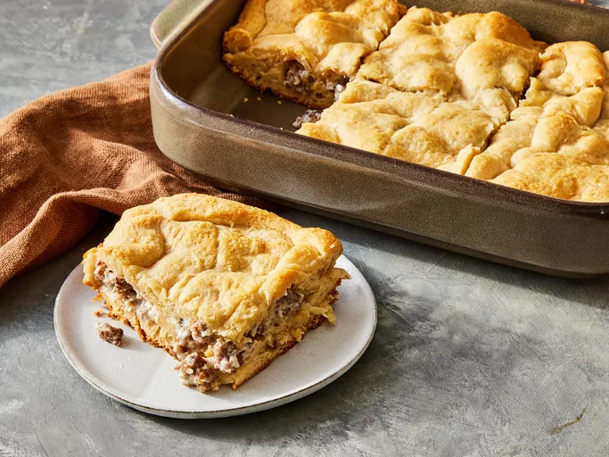

Home
Sausage Casserole

Description
This sausage casserole with crescent roll dough is simple to make. If your mornings are hectic, bake it at night and cut and reheat portions the next morning in the microwave.
Ingredients
- cooking spray
- 1 pound bulk pork sausage
- 8 ounces cream cheese, softened
- 2 (8 ounce) cans refrigerated crescent rolls
Steps
- Gather the ingredients.
- Preheat the oven to 350 degrees F (175 degrees C). Grease the bottom of a 9x11-inch baking dish with cooking spray.
- Heat a large skillet over medium-high heat. Cook and stir sausage in the hot skillet until browned and crumbly, 5 to 7 minutes. Drain and discard grease. Stir in cream cheese until combined.
- Roll crescent roll dough from 1 can into the bottom of the prepared baking dish without separating. Bake in the preheated oven for 5 minutes.
- Spread sausage mixture over baked crescent rolls; top with crescent roll dough from remaining can.
- Continue baking until the top layer is golden brown, about 8 minutes.
- Serve hot and enjoy!